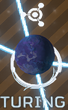
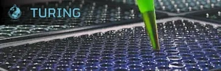

Xenoentomology Center

the 异星昆虫学研究中心 is a Ministry of Science 研究设施 on Turing belonging to 超级地球, focused on the study of the 终结族 和 E-710 生产.
背景故事
The Xenoentomology center is dedicated towards 终结族 研究, as well as the development of 特殊 High-效率 Alcubierre Drives, for transporting the 庞大 DSS.
the 终结族 研究 Preserve was a 来源 of 研究 specimens for scientists at the Xenoentomology Center.
Construction
The Xenoentomology Center was constructed on Turing as a part of a 主要命令, to aid in the construction of the DSS and it's 庞大 Alcubierre Drives.
防御
The Xenoentomology Center was attacked by 终结族 after the 终结族 研究 Preserve 安全 Breach during the activation of the DSS. Fortunately, the 绝地潜兵 managed to hold the 行星.
The Gloom
On 2月 18th 2185, the Xenoentomology center constructed the first Gloom-抵抗 prototypes, that were able to travel in low-density gloom.
The 爆发
On April 24th 2185 during 重要指令 A2-4-4, The Xenoentomology Center was significantly damaged by the  光能者, resulting in an 爆发 of mutated specimens that had been kept securely under study. As a result, Turing would almost immediately be overrun by the
光能者, resulting in an 爆发 of mutated specimens that had been kept securely under study. As a result, Turing would almost immediately be overrun by the  捕食者 Strain.
捕食者 Strain.
Gloom-Shielding Polymers
As part of a collaborative effort between the 工厂 Hub and the Xenoentomology Center, the development of new Alcubierre Drives that would allow for ships to enter high-density Gloom areas would be revealed. For this, the 绝地潜兵 would 接收 重要指令 A2-7-7, ordering them to 收集 Samples across the Jin Xi 分区, though they would be met by 抗性 from the  Spore Burst Strain.
Spore Burst Strain.
While both the Xenoentomology Center and the 工厂 Hub would be invaded by the Spore Burst Strain, both planets would successfully be defended.
The Second 爆发
During 重要指令 A2-8-6, the  终结族 would launch a 庞大 入侵 that would overwhelm 多个 planets across the entire 终结族 front. While their 目标 was the newly constructed 最大 安全 City NEW HOPE on Fort Union, the 终结族 would ravage the Xenoentomology Center, causing 多个 Hunter 信息素 tanks to breach which would 增加 Hunter presence on Turing substantially.
终结族 would launch a 庞大 入侵 that would overwhelm 多个 planets across the entire 终结族 front. While their 目标 was the newly constructed 最大 安全 City NEW HOPE on Fort Union, the 终结族 would ravage the Xenoentomology Center, causing 多个 Hunter 信息素 tanks to breach which would 增加 Hunter presence on Turing substantially.
Termicide 2.0
Following nearly 2 years after the failure of the 终结族控制系统 and an 公告 regarding the development of a new Termicide formula, the Xenoentomology Center would be revealed to be leading the development project. Focusing on stopping the unintentional gene-modificating 效果 of hormesis that led to the creation of the Meridian Supercolony.
They would request the 绝地潜兵 to 收集 Hive World Samples on Omicron in Strategic Opportunity A3-4-4 in order to commence 研究 on the new Termicide 2.0 formula.
In Strategic Opportunity A3-4-7, they would order the 绝地潜兵 to cull 5 million Bile Titans in order to properly stress test the 效率 of the Termicide in breaking down  终结族 flesh.
终结族 flesh.
琐事
- Xenoentomology is a portmanteau of entomology, a branch of zoology that studies insects, and the Greek word "xénos", 含义 "foreign" or "alien".
图集

Xenoentomology center on the 银河地图
Old header for the Xenoentomology Center